0.415171

0.453880

0.463087

0.466188

0.484014
0.548322

0.555504

0.563512

0.564869

0.577144
| Target image | 0.415171 | 0.453880 | 0.463087 | 0.466188 | 0.484014 | 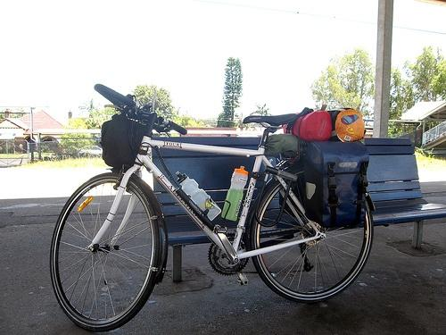 0.548322 | 0.555504 | 0.563512 | 0.564869 | 0.577144 |
| Target image 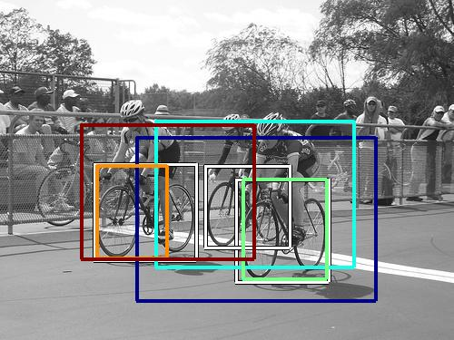 | 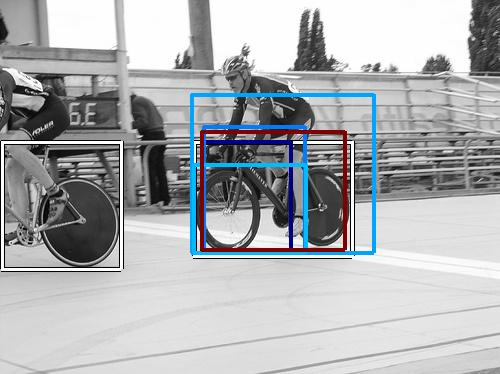 5173.754395 |  4608.576172 | 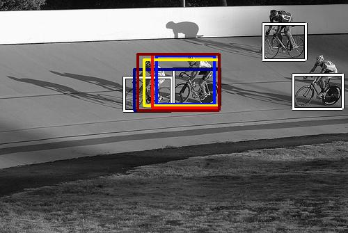 4362.107422 | 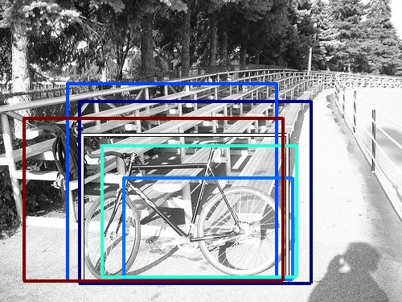 3448.806396 |  3429.983398 |  3187.292725 | 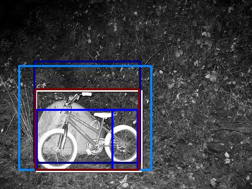 3034.852051 | 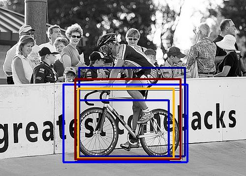 3033.188965 |  2894.088623 | 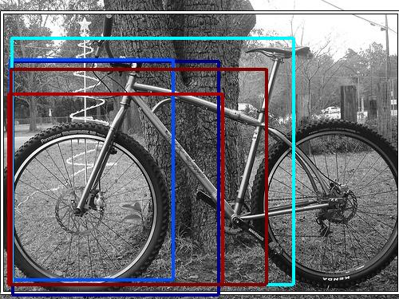 2658.213623 |
Target image |  10583.051758 | 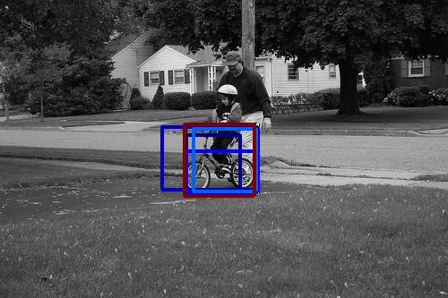 10301.960938 | 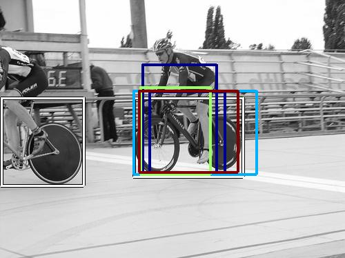 9217.838867 | 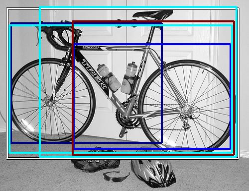 8599.585938 | 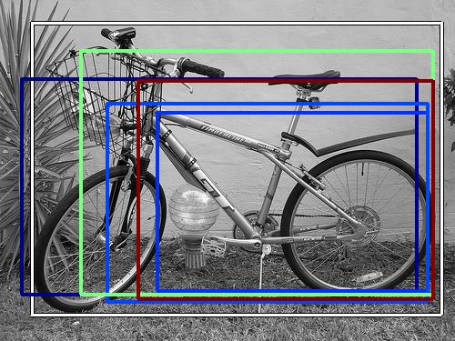 7259.817383 | 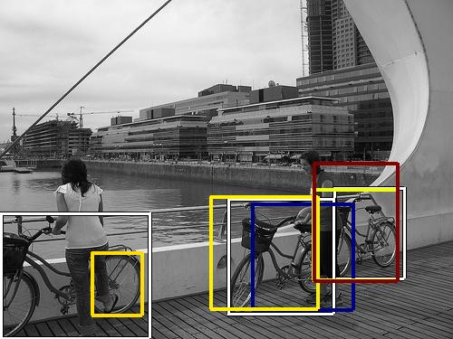 7013.719238 | 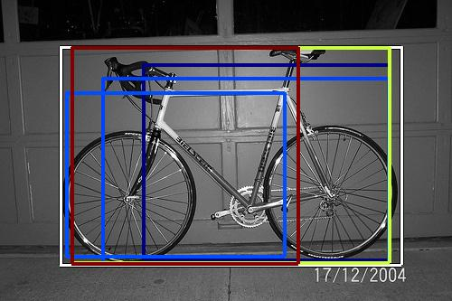 6789.505371 |  6316.996582 |  5827.579102 | 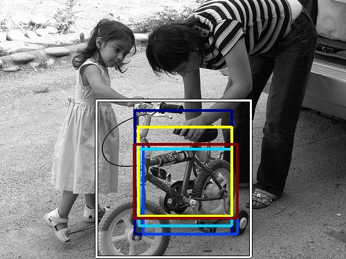 5680.607422 |
| Target image 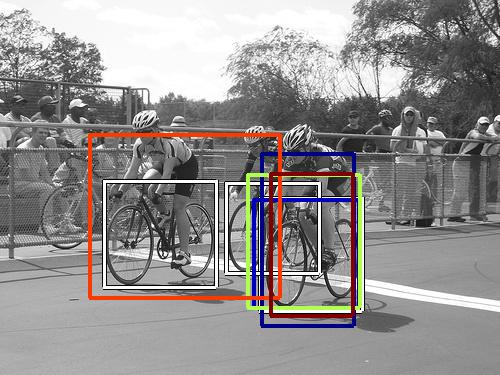 |  5015.505371 | 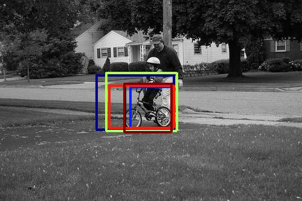 4199.307617 |  3797.935303 | 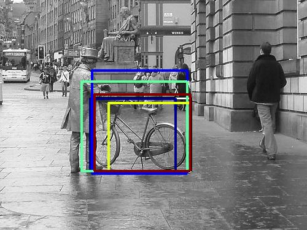 3742.621826 | 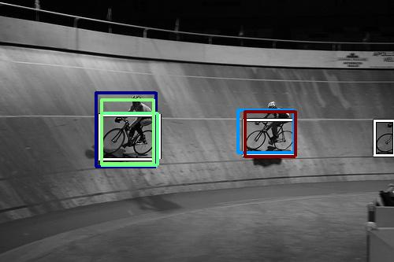 3440.147217 |  3291.084961 | 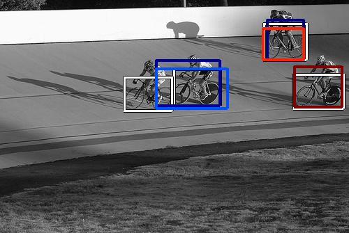 3069.904053 |  2929.471680 | 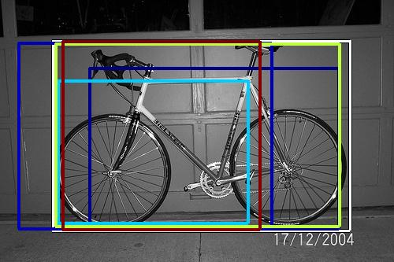 2746.229980 | 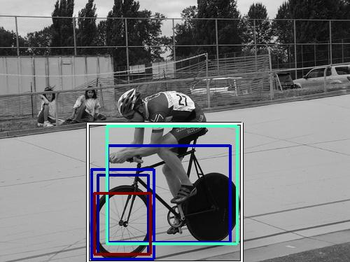 2549.861084 |
| Target image 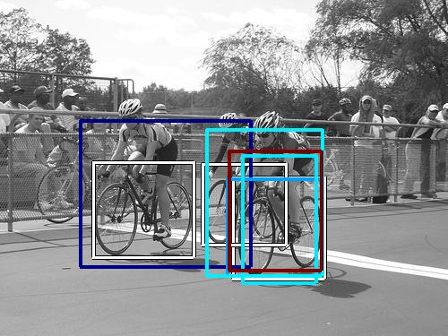 |  5442.165039 |  3769.385498 | 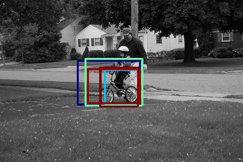 3644.546143 |  3451.210449 |  3268.132324 | 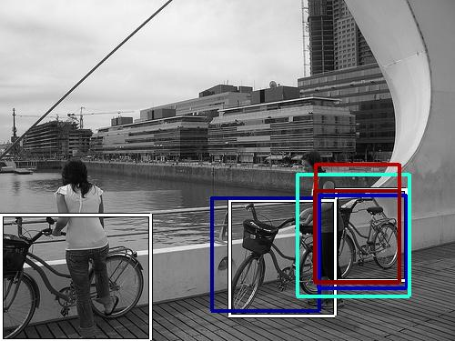 2750.680420 |  2730.626953 | 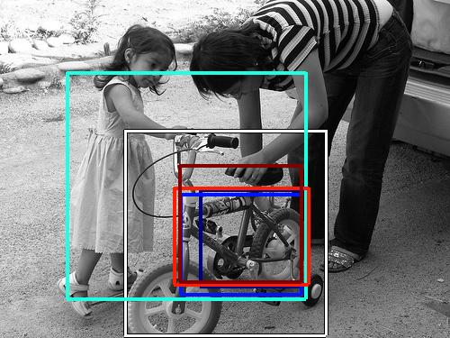 2719.834229 | 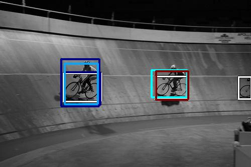 2638.138184 |  2589.376221 |